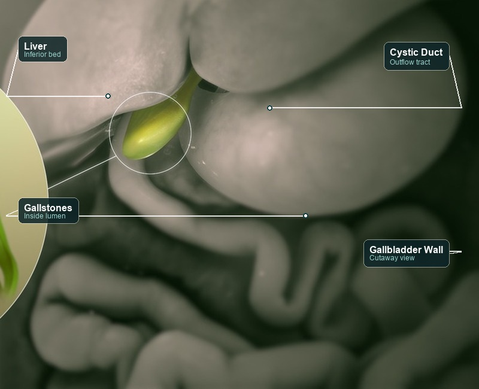
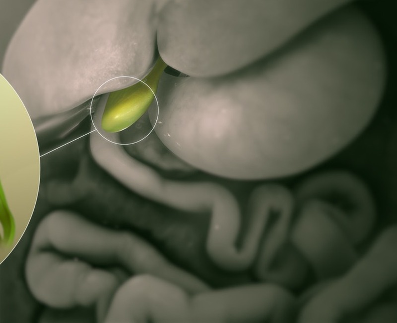
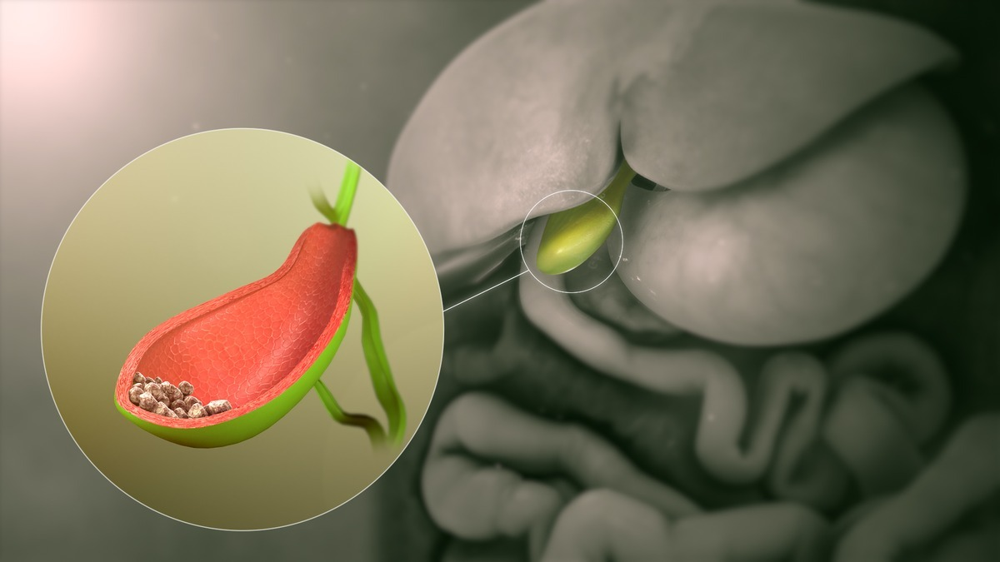
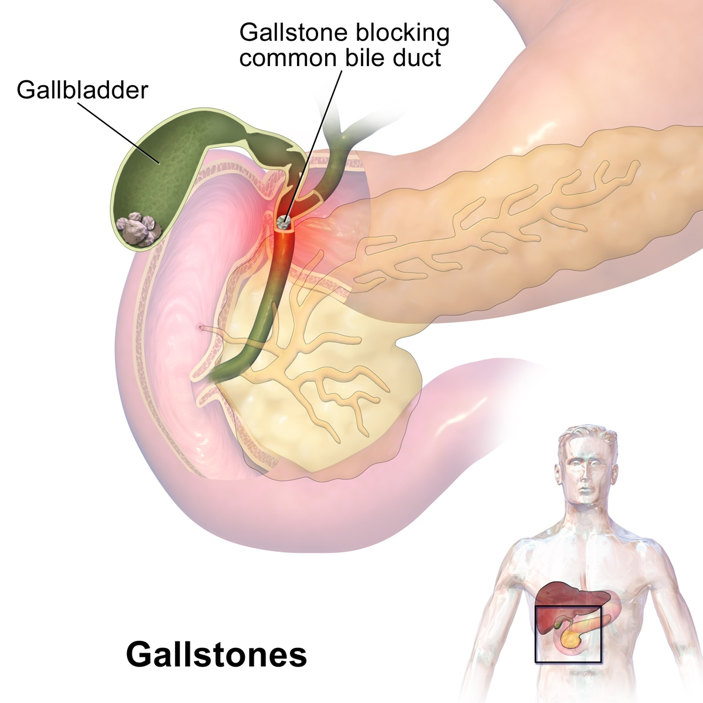
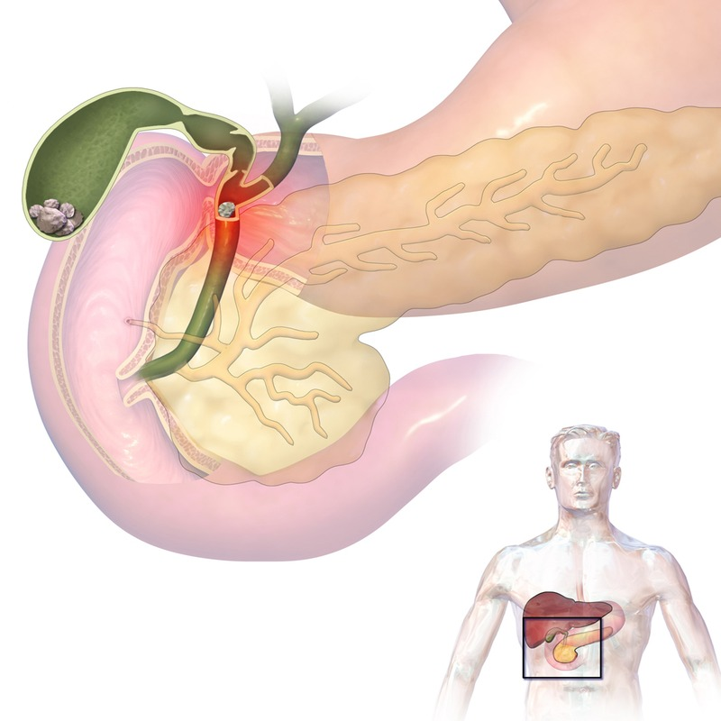

Focused Biliary Macro with Labels
Features clean pointer lines with frosted callout badges for Liver, Cystic Duct, Gallbladder Wall, and Gallstones (inside lumen). Maximum anatomical clarity for patients.

Focused Biliary Macro (Clean)
Tightly cropped macro focus directly on the gallbladder lumen and stones, eliminating outer liver lobes. Clean, clinical, and unlabelled (matching Mayo Clinic aesthetic where description sits in the caption).

3D In-Situ Anatomical Render
Shows the entire liver in natural anatomical position with a cutaway view of the gallbladder revealing faceted gallstones in the fundus and neck. Clarifies where the organ sits beneath the liver.

Blausen Medical Atlas (Complete Original)
The complete original 1200×1200 textbook diagram showing torso orientation, digestive organs (Liver, Gallbladder, Duodenum, Pancreas, CBD, Pancreatic Duct), with an enlarged cutaway circle showing faceted gallstones inside the lumen. All labels 100% visible.

Biliary Ducts & Impaction Diagram
Focuses on the cystic duct, common bile duct, and pancreatic ampulla, demonstrating where gallstones cause blockage and jaundice.

Clinical Abdominal Ultrasound (USG)
Authentic clinical sonogram showing a hyperechoic gallstone casting posterior acoustic shadowing inside the fluid-filled gallbladder lumen.